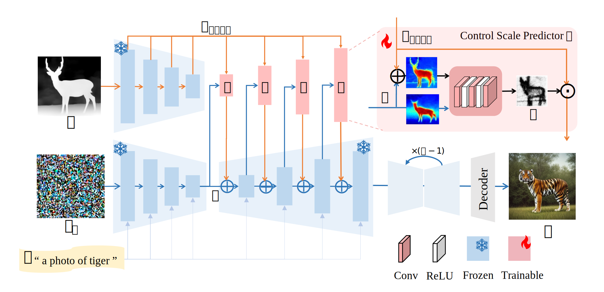
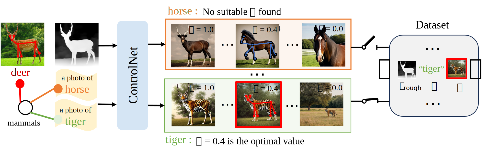

SmartControl: Enhancing ControlNet for
Handling Rough Visual Conditions
Xiaoyu Liu1
Yuxiang Wei1
Ming Liu1
Xianhui Lin
Peiran Ren
Jingfeng Zhang
Wangmeng Zuo1
1Harbin Institute of Technology, Harbin, China

Our proposed SmartControl can perform controllable image generation under rough visual conditions extracted from other images. In contrast, ControlNet adheres to control conditions, which may goes against with human intentions.
[Paper]
[BibTeX]
[Code]
Abstract
Human visual imagination usually begins with analogies or rough sketches. For example, given an image with a girl playing guitar before a building, one may analogously imagine how it seems like if Iron Man playing guitar before Pyramid in Egypt. Nonetheless, visual condition may not be precisely aligned with the imaginary result indicated by text prompt, and existing layout-controllable text-to-image (T2I) generation models is prone to producing degraded generated results with obvious artifacts. To address this issue, we present a novel T2I generation method dubbed SmartControl, which is designed to modify the rough visual conditions for adapting to text prompt. The key idea of our SmartControl is to relax the visual condition on the areas that are conflicted with text prompts. In specific, a Control Scale Predictor (CSP) is designed to identify the conflict regions and predict the local control scales, while a dataset with text prompts and rough visual conditions is constructed for training CSP. It is worth noting that, even with a limited number (e.g., 1,000~2,000) of training samples, our SmartControl can generalize well to unseen objects.

Framework
Our method is built upon ControlNet, and can generate photo-realistic images with inconsistent prompt and rough visual condition (i.e., tiger v.s. deer) as input. To achieve this, we introduce a control scale predictor \(\mathit{f}\) for each decoder block of ControlNet. The predictor takes \(\mathbf{h}\) and \(\mathbf{h}+\mathbf{h}_\mathit{cond}\) as input and predicts a pixel-wise control scale map \(\boldsymbol{\alpha}\). The condition feature \(\mathbf{h}_\mathit{cond}\) is then updated by \(\boldsymbol{\alpha}\cdot\mathbf{h}_\mathit{cond}\) to relax the control scale at conflict region, resulting a plausible and photo-realistic generated image.

Pipeline for unaligned data construction
Given an image and corresponding class, we extract the visual condition crough (e.g., depth) by the pre-trained estimator. Then, for the given class (e.g., deer), we select an alternative unaligned class (e.g., tiger or horse) based on class hierarchy, and use it to obtain the unaligned prompt \(\mathbf{p}\). By iterating through different control scale \(\alpha \) of ControlNet , we can generate a series of images for \((\mathbf{c}_\mathit{rough},\mathbf{p})\). Then, we manually filter those images that are faithful to both text and rough condition to construct our dataset. For example, for tiger, the image generated with \(\alpha = 0.4\) is plausible and is added to our dataset. While for horse, there is not a suitable image and all images are discarded.

Comparison with other methods

Result with IP-Adapters
Visualization of generated samples with the IP-Adapter. Note that we do not need fine-tune our control scale predictor.

Ablation Studies
1. Control Scale : In ControlNet, we can tune the fusion weight of visual conditions (\ie, \(\mathbf{h} + \alpha * \mathbf{h}_\mathit{cond}\)) to relax the inconsistency between text prompts and visual conditions. We vary the value of \( \alpha\) from 1.0 to 0.0 to explorate its influence.

2. Different levels of conflict: SmartControl performs exceptionally well across levels degrees of conflict.

BibTex
@article{liu2024smartcontrol,
title={SmartControl: Enhancing ControlNet for Handling Rough Visual Conditions},
author={Liu, Xiaoyu and Wei, Yuxiang and Liu, Ming and Lin, Xianhui and Ren, Peiran and Xie, Xuansong and Zuo, Wangmeng},
journal={arXiv preprint arXiv:2404.06451},
year={2024}
}